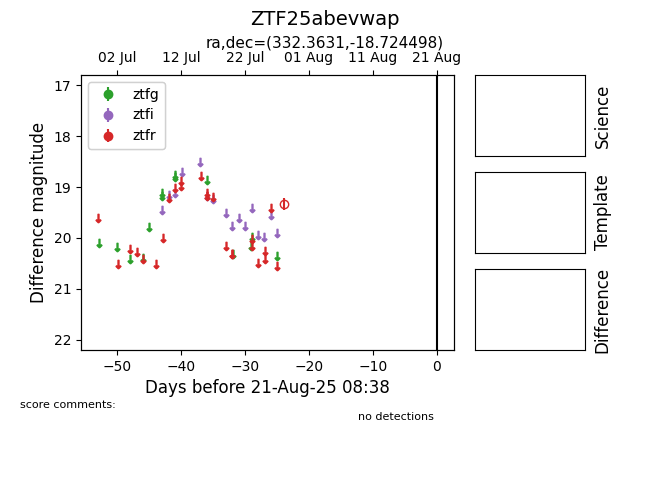

Target ZTF25abevwap at 2025-08-21 08:38, see:
FINK: fink-portal.org/ZTF25abevwap
Lasair: lasair-ztf.lsst.ac.uk/objects/ZTF25abevwap
ALeRCE: alerce.online/object/ZTF25abevwap
alt names
ZTF25abevwap (ztf,alerce)
coordinates:
equatorial (ra, dec) = (332.3631,-18.72450)
galactic (l, b) = (36.9031,-51.93827)
photometry
